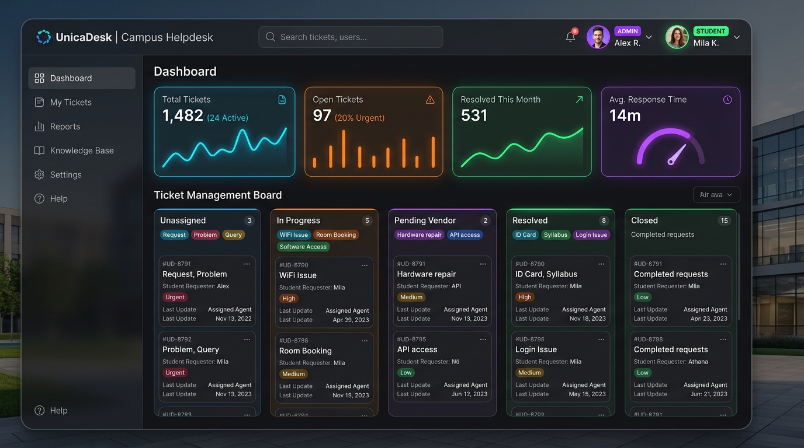

Final Year Project
Campus Helpdesk System
A centralized, multi-role web ticket management system built to streamline issue tracking, triage, and resolution across university departments.
Streamlined campus issue reporting for 200+ students and staff, cutting resolution tracking overhead.
Engineered secure RESTful APIs with RBAC spanning 3 distinct roles: Student, Staff, and Administrator.
Managed end-to-end ticket lifecycle workflows with full auditability and status traceability.
Java
Spring Boot
MySQL
REST API
RBAC
HTML5/CSS3
JavaScript